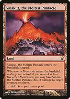

How the deck actually kills a table

Field of the DeadA Game Changer and a win engine that does not need your commander. When seven or more differently named lands enter together with Field among them, it triggers for each entering land if the name threshold is met. Zombies defend you, station the ship, and attack in later turns. Ancient Greenwarden doubles the eligible triggers.

Valakut, the Molten PinnacleWith Dryad active, every land is a Mountain. Six or more lands entering together can each trigger Valakut, including Valakut itself, because each sees at least five other Mountains. This damage can remove blockers or finish players. The five-other-Mountains condition must still hold when a trigger resolves; losing Dryad can switch it off.
A concrete late-game kill is a fully stationed Hearthhull, Zuran Orb, Splendid Reclamation in hand, and ten lands. Float at least four mana, sacrifice ten lands to Orb to make every opponent lose twenty life, then cast Reclamation. After the ten lands return, sacrifice them again for another twenty. The returned lands can be tapped. This is a finite line requiring an established board, not an infinite loop; an opponent can still interrupt the drain triggers, commander, recursion, or graveyard access.
You gain forty life from the twenty Orb activations in that example. If additional creatures such as Korvold or The Gitrog Monster are present, their draw triggers must also be handled; do not accidentally draw past the end of your library. With Lotus Field involved, carefully account for its additional sacrifice triggers rather than assuming all returned lands stay in play.
What to keep in an opening hand and how to sequence
Keep three or four lands, early green access, acceleration or extra land plays, and a creature or draw engine that gets the ship working. A hand with only rocks and expensive payoffs can cast Hearthhull but cannot station it. A hand of multiple recursion effects without lands to play or sacrifice is similarly slow.
An example keep is Verdant Catacombs, Command Tower, Forest, Nature's Lore, Lotus Cobra, Icetill Explorer, and Tamiyo's Safekeeping. Nature's Lore can fetch Taiga or Bayou to establish a missing colour; the original duals carry the Forest type and can enter untapped. Decide whether Cobra's explosive line or guaranteed land ramp better matches the table's removal.
The opening objective is mana plus a two-power creature, followed by Hearthhull's draw engine. Get to eight counters when the drain or combat damage matters, but recognize that remaining a noncreature artifact can protect the ship through your own creature sweeper. You choose when to add more counters; there is no requirement to finish stationing immediately.
Once fully charged, attack with vigilance before tapping Hearthhull for cards if the attack is safe. Sequence replayed fetchlands around Nissa and Tannuk's second-resolution bonuses, and save land-return spells for turns with a real payoff. Fetch duals for reliable early colours; fetch basics when that preserves typed dual targets for later or supports your remaining basic-search spells.
Against graveyard hate, preserve lands in hand and use draw, Field of the Dead, Scute Swarm, or ordinary landfall to keep developing. Remove the hate before sacrificing your mana base. Against removal-heavy tables, keep more than one recovery route and avoid exposing every creature engine to the same wipe.
The three Game Changers are Crop Rotation, Field of the Dead, and Seedborn Muse. The intended finishes are finite land-sacrifice bursts, landfall damage, and combat from a developed board. There is no planned infinite combo, extra-turn chain, or opposing mass land denial. The build is designed to accumulate powerful resources through Bracket 3's normal game length and then close decisively.